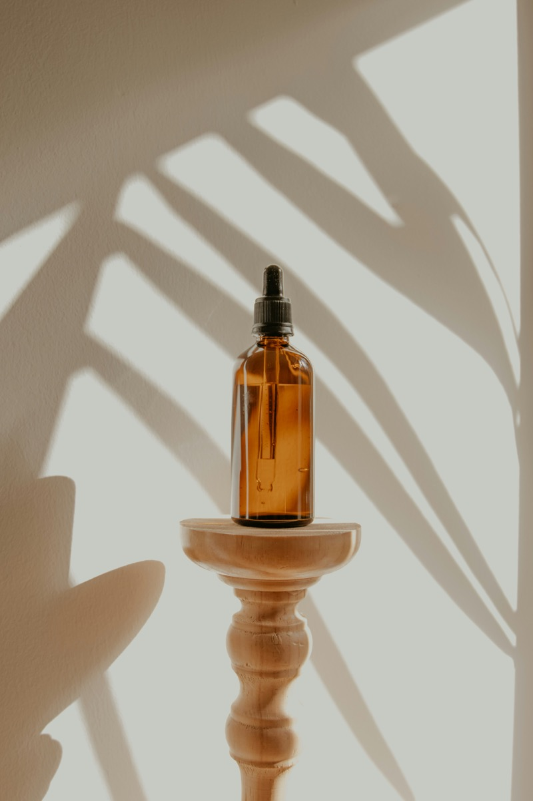

Journal
The portrait edit
Observe how soft daylight changes the appearance of colour and texture.
Choose a single light source before adding a reflector. Keep highlights on skin readable and preserve detail in the deepest shadow.
Next · Daily ritual →
A portrait beside the window
Turn the sitter slightly toward a window and watch the shadow along the cheek. A small change in angle can reveal texture without changing the makeup or the camera settings.
Back to Serein →